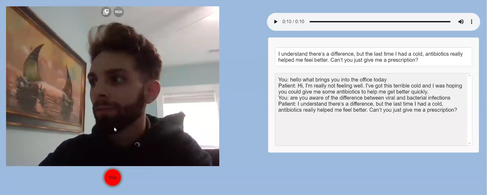
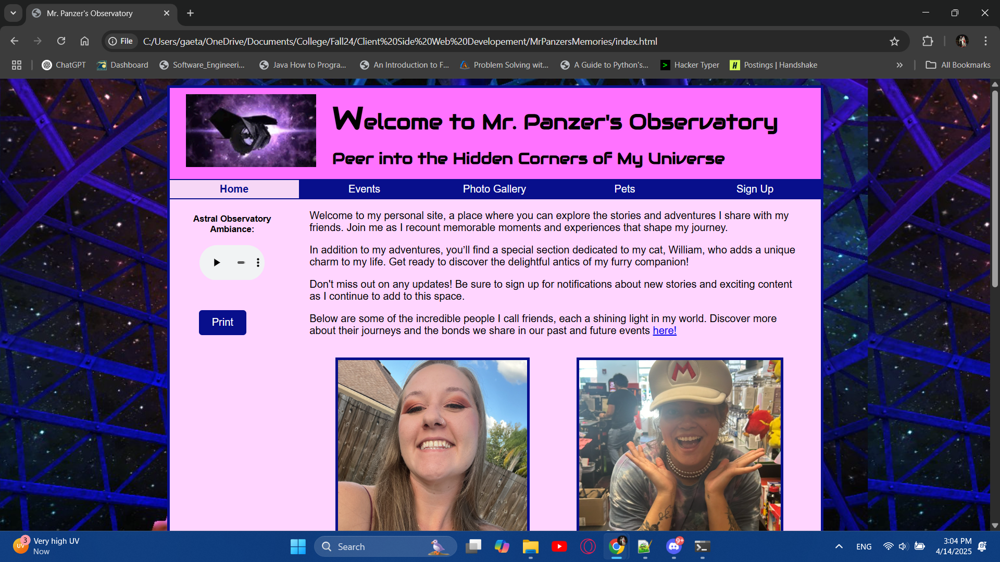
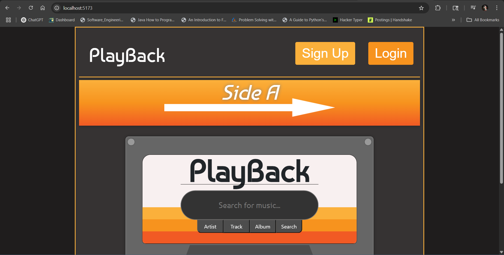
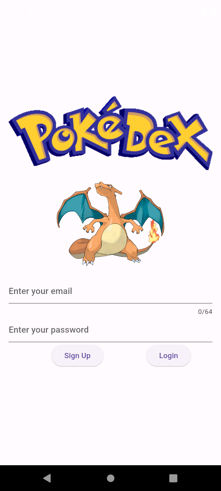

I developed a video avatar system designed to help nursing students improve their ability to exert authority in patient-client interactions. The project utilized AI to create realistic video avatars that simulate real-life patient scenarios, offering students an immersive way to practice and gain confidence in assertive communication. I set up multiple endpoints to ensure smooth interaction between the front-end and back-end, integrating an API to manage data flow and system operations. The front-end was built using HTML and CSS, ensuring a user-friendly and intuitive experience. This project effectively combined AI, video technology, and web development to provide nursing students with a practical and engaging learning tool.


Mr. Panzer's Observatory is a full-stack personal website built with HTML, CSS, JavaScript, PHP, and MySQL. Designed in a blog-style format, it features dynamic event listings, photo galleries of events and pets, and a secure user authentication system. The homepage offers a curated look into personal moments, showcasing friends and life snapshots in an engaging and interactive layout.
Note: View Website links to an earlier static version of the site without PHP/MySQL functionality, as the full dynamic version is hosted on a private school server. However, the complete project, including all backend code and database integration, is available on GitHub.

PlayBack is a personalized web app that lets users reflect on their music journey by tracking listening habits, privately rating songs, and sharing concise, tweet-length thoughts on albums or tracks. I built the frontend with React for a smooth, interactive experience, and developed the backend using Node.js and Express. The app uses SQLAlchemy to manage a MySQL database, ensuring efficient and secure data storage. PlayBack also integrates with the Spotify API to sync user music data and enable seamless playback. This project challenged me to design an intuitive interface while managing complex data relationships and external API integration — resulting in a platform that encourages thoughtful, user-driven music exploration beyond typical streaming apps.
Pocket Monster Encyclopedia

The Pokédex App is a Flutter-based application that provides a comprehensive and interactive experience for Pokémon enthusiasts. Users can create secure accounts, manage their profiles, and explore a wide range of Pokémon data. The app integrates with Google Firebase and Firestore for data management and offers a rich set of features, including search functionality, favorites, and camera integration.